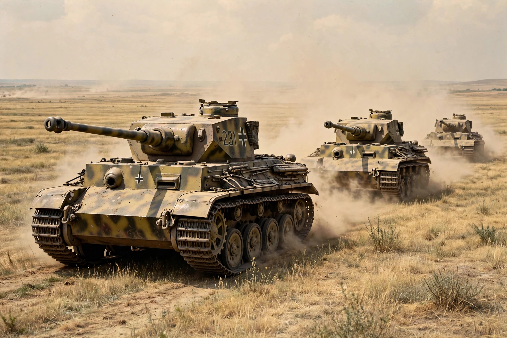

Operation Citadel
| Operation Citadel | |
| Date | 5–17 July 1943 |
|---|---|
| Location | Kursk salient, Russian SFSR, Soviet Union |
| Part of | Battle of Kursk, Eastern Front of World War II |
| Commanders | Erich von Manstein, Hermann Hoth, Walter Model (Germany); Konstantin Rokossovsky, Nikolay Vatutin (USSR) |
| Result | Soviet victory |

Operation Citadel (German: Unternehmen Zitadelle) was the German offensive operation in July 1943 against the Soviet forces in the Kursk salient during the Second World War on the Eastern Front. It was designed to pinch off the salient — a bulge roughly 250 km wide projecting into German-held territory — by simultaneous attacks from north and south, thereby encircling and destroying large Soviet forces.
Plans
Field Marshal Erich von Manstein's Army Group South, including Hoth's 4th Panzer Army, attacked from the south, while Model's 9th Army attacked from the north. The offensive was repeatedly postponed from May to July 1943 to await new Panther and Tiger tanks, Ferdinand tank destroyers and additional forces — delays that allowed the Red Army, warned by intelligence including the "Lucy" spy ring, to construct defence lines up to 175 km deep.
Course
The attack opened on 5 July. In the south German armour advanced toward Prokhorovka, where on 12 July it clashed with the 5th Guards Tank Army in one of the largest tank battles in history. In the north Model's advance stalled after about 15 km. On 13 July Hitler halted Citadel, partly because of the Allied invasion of Sicily, and Soviet counteroffensives (Operations Kutuzov and Rumyantsev) then drove the Germans back.
Significance
Citadel was the last strategic offensive the Germans were able to launch in the east; thereafter the strategic initiative remained with the Soviet Union.